NOAA Storm Database - worst cases
erickfis
2017 abril, 29
In this study we have analysed the NOAA Storm Database in order to determine what are the worst natural catastrophic events, both in terms of public health and in economic impact.
The U.S. National Oceanic and Atmospheric Administration’s (NOAA) storm database tracks characteristics of major storms and weather events in the United States, including when and where they occur, as well as estimates of any fatalities, injuries, and property damage.
The database currently contains data from January 1950 to January 2017, as entered by NOAA’s National Weather Service (NWS).
The database can be found on:
https://www.ncdc.noaa.gov/stormevents/ftp.jsp
RPubs version, with fewer plots, for Coursera: http://rpubs.com/erickfis/noaa
1 Objective
The goal of this study is to answer the questions:
Across the United States, which types of events were the most harmful with respect to population health ever recorded in a single occurrence?
Which types of events caused most harm to population health along all those years?
Which types of events had the greatest economic consequences in a single occurrence?
Which types of events had the greatest economic consequences along all those years?
Which were the places that were subject to the greatest losses, both in terms of human health and economic losses.
2 Data Processing
Data Processing
This code loads the original data and them choose which variables are useful to answer our questions:
library(scales)
library(stringr)
library(data.table)
library(chron)
library(dplyr)
library(lubridate)
library(ggplot2)
library(rmarkdown)
library(RColorBrewer)
library(gridExtra)
library(grid)Reading original database:
#fileUrl <- "https://d396qusza40orc.cloudfront.net/repdata%2Fdata%2FStormData.csv.bz2"
#download.file(fileUrl, "StormData.bz2", method = "curl")
#Full data
dados <- fread(sprintf("bzcat %s | tr -d '\\000'", "StormData.bz2"), na.strings = "")##
Read 19.6% of 967216 rows
Read 40.3% of 967216 rows
Read 55.8% of 967216 rows
Read 77.5% of 967216 rows
Read 84.8% of 967216 rows
Read 902297 rows and 37 (of 37) columns from 0.523 GB file in 00:00:07dados <-tbl_df(dados)
# this do a sample data base, with 50000 obs, used for speeding up initial works:
# linhas <- nrow(dados)
# linhas <- sample(linhas,50000)
# dataS <- dados[linhas,]
# write.csv(dataS, "StormData")
# dados <- fread(sprintf("bzcat %s | tr -d '\\000'", "StormData.bz2"))
# dados <-tbl_df(dados)
# dados <- select(dados, -1)
# treating var names
names(dados) <- gsub("_", ".", tolower(names(dados)))
names(dados) ## [1] "state.." "bgn.date" "bgn.time" "time.zone" "county"
## [6] "countyname" "state" "evtype" "bgn.range" "bgn.azi"
## [11] "bgn.locati" "end.date" "end.time" "county.end" "countyendn"
## [16] "end.range" "end.azi" "end.locati" "length" "width"
## [21] "f" "mag" "fatalities" "injuries" "propdmg"
## [26] "propdmgexp" "cropdmg" "cropdmgexp" "wfo" "stateoffic"
## [31] "zonenames" "latitude" "longitude" "latitude.e" "longitude."
## [36] "remarks" "refnum"This database has 902297 observations. Each observation corresponds to an event occurrence.
To determine the most harmful events to human health, we will check the variables related to human health, which are “fatalities” and “injuries”.
To determine the most harmful events to economy, we will check the variables related to economic measures, from “propdmg” through “cropdmgexp”.
Also, in order to analyse various occurrences of the same event, we will measure the duration of the event, its magnitude and where the event occurred (state and county name).
# select desired vars
harm.df <- dados %>% select(evtype, mag, state, countyname, bgn.date, end.date, 23:28)
# treat vars
harm.df <- harm.df %>%
mutate(bgn.date = mdy_hms(bgn.date), end.date = mdy_hms(end.date),
day = as.Date(bgn.date, "%m/%d/%Y"),
duration = -as.period(interval(end.date, bgn.date)),
event = tolower(as.character(evtype)),
countyname =strtrim(countyname,9)) %>%
select(event, 2, day, duration, 3:4, 7:12)
# fixing exp for economic data
harm.df$propdmgexp[which(harm.df$propdmgexp=="K")] <- as.character(3)
harm.df$propdmgexp[which(harm.df$propdmgexp=="m")] <- as.character(6)
harm.df$propdmgexp[which(harm.df$propdmgexp=="M")] <- as.character(6)
harm.df$propdmgexp[which(harm.df$propdmgexp=="B")] <- as.character(9)
harm.df$propdmgexp <- as.numeric(harm.df$propdmgexp)
harm.df$cropdmgexp[which(harm.df$cropdmgexp=="K")] <- as.character(3)
harm.df$cropdmgexp[which(harm.df$cropdmgexp=="m")] <- as.character(6)
harm.df$cropdmgexp[which(harm.df$cropdmgexp=="M")] <- as.character(6)
harm.df$cropdmgexp[which(harm.df$cropdmgexp=="B")] <- as.character(9)
harm.df$cropdmgexp <- as.numeric(harm.df$cropdmgexp)
harm.df <- mutate(harm.df, prop.ev = propdmg*10^propdmgexp,
crop.ev = cropdmg*10^cropdmgexp)This is a really big database which data has been being registered by a lot of different people since 1950. Thus, as expected, there are variations on how people registered events.
For exemple, the string “snow” was used to register a lot of events. They are the same type of event, but count as different:
eventos <- grep("snow", harm.df$event, value = TRUE)
eventos <- sort(unique(eventos))
length(eventos)## [1] 118eventos[1:10]## [1] "accumulated snowfall" "blizzard and heavy snow"
## [3] "blizzard/heavy snow" "blowing snow"
## [5] "blowing snow & extreme wind ch" "blowing snow- extreme wind chi"
## [7] "blowing snow/extreme wind chil" "cold and snow"
## [9] "drifting snow" "early snow"This is why we decided to filter those events: we grouped them by its commom strings.
# treating event types
eventos <- harm.df$event
# first, need to see what are the event types
contagem <- sort(table(eventos))
# them we create this list of terms
lista.search <- c(
"dry",
"fog",
"wind",
"winter",
"slide",
"snow",
"flood",
"fld",
"cold|freez",
"hurricane",
"tornado",
"rain|precip",
"hail",
"heat|warm",
"tide",
"storm",
"record",
"blizzard",
"fire",
"funnel",
"surf")
lista.replace <- c(
"drought",
"fog",
"wind",
"winter",
"slide",
"snow",
"flood",
"flood",
"cold",
"hurricane",
"tornado",
"rain",
"hail",
"heat",
"tide",
"storm",
"record temperature",
"blizzard",
"fire",
"funnel",
"surf")
for (i in 1:length(lista.search)) {
eventos[grepl(lista.search[i], eventos)] <- lista.replace[i]
}
# lets group the events whose count is < 5 and call it "other"
contagem <- sort(table(eventos))
outros <- names(contagem[contagem<5])
eventos[eventos %in% outros] <- "other"
# sort(table(eventos))
# returning treated events
harm.df$event <- toupper(eventos)# Treating County Names
cidades <- toupper(harm.df$countyname)
cidades <- str_trim(cidades)
cidades <- gsub("_| |-", ".", cidades)
cidades[grep("\\.\\.$", cidades)] <- gsub("\\.\\.", "",
cidades[grep("\\.\\.$", cidades)]
)
cidades <- sapply(strsplit(cidades, split=">", fixed=TRUE), function(x) (x[1]))
cidades <- sapply(strsplit(cidades, split="(", fixed=TRUE), function(x) (x[1]))
cidades <- sapply(strsplit(cidades, split=",", fixed=TRUE), function(x) (x[1]))
harm.df$countyname <- cidades
rm(dados) # house cleanning3 Human health: the most harmfull events
We have determined what events did more harm to human health.
There were occurrences that caused zero fatalities but a lot of injuries. The inverse is also true, so we did a separate analysis to fatal and non-fatal events.
3.1 Fatal Occurrences
3.1.1 Most fatal in a single occurrence
Most fatal in a single occurrence
In order to determine what were the most fatal events in a single occurrence, we need to see how fatalities are distributed along the occurrences.
# subset original data
fatal.df <- harm.df %>%
filter(!is.na(fatalities)) %>%
select(1:7)
# quantiles
qt <- quantile(fatal.df$fatalities, probs=seq(.9,1,0.001))
# distribution plot
plt.distr.fatal0 <- ggplot(fatal.df, aes(fatalities))
plt.distr.fatal0 <- plt.distr.fatal0 + geom_density(aes(y=..density..)) + xlim(0,.5) +
labs(title="All events") +
theme(plot.title = element_text(hjust = 0.5))
# display only the qts next to fatal events
qt[(length(qt)-(length(qt[qt>=1])+1)): length(qt)]## 99.1% 99.2% 99.3% 99.4% 99.5% 99.6% 99.7% 99.8% 99.9% 100.0%
## 0 0 1 1 1 1 1 2 3 583Looking at this distribution, we can infer that the vast majority of those occurrences were not fatal at all: 99.2% occurrences didn’t caused any fatalities.
On the other hand, fatal occurrences had to have at least 1 fatality.
Now, among the fatal occurrences, we are interested in the ones whose fatalities are beyond the confidence interval, ie. above 99% of the most common values.
# subset for fatal events
fatal.df <- filter(fatal.df, fatalities > 0) %>%
arrange(desc(fatalities)) %>%
mutate(mean = mean(fatalities),
median = median(fatalities),
rank = seq_len(length(event)))
# quantiles, same as
# poisson.test(mean, conf.level = 0.95)
qt <- quantile(fatal.df$fatalities, probs=seq(.999,1,0.005))
qt## 99.9%
## 74.027Looking at this distribution, we can infer that 99.8% of the fatal occurrences caused up to 74.027 fattalities.
Distribution plots
# distribution plot
plt.distr.fatal1 <- ggplot(fatal.df, aes(fatalities))
plt.distr.fatal1 <- plt.distr.fatal1 + geom_density(aes(y=..density..)) +
xlim(0,(qt[1]/10)) +
labs(title="Fatal events") +
theme(plot.title = element_text(hjust = 0.5))grid.arrange(plt.distr.fatal0, plt.distr.fatal1, nrow=1, ncol=2,
bottom="Population distribution")
grid.rect(gp=gpar(fill=NA))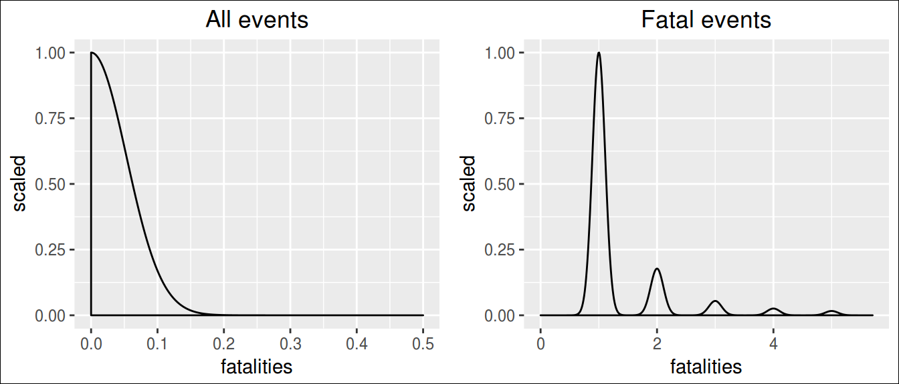
In this study, we looked on the 1% deadliest occurrences.
# subset for 99% CI
fatal95.df <- fatal.df %>% filter(fatalities>qt[1])
# create color pallete for all events
colourCount.fatal.single = length(unique(fatal95.df$event))
getPalette = colorRampPalette(brewer.pal(colourCount.fatal.single, "Set1"))
# print a table
kable(fatal95.df[, c(10,1:9)])| rank | event | mag | day | duration | state | countyname | fatalities | mean | median |
|---|---|---|---|---|---|---|---|---|---|
| 1 | HEAT | 0 | 1995-07-12 | 0S | IL | ILZ003 | 583 | 2.171638 | 1 |
| 2 | TORNADO | 0 | 2011-05-22 | 0S | MO | JASPER | 158 | 2.171638 | 1 |
| 3 | TORNADO | 0 | 1953-06-08 | NA | MI | GENESEE | 116 | 2.171638 | 1 |
| 4 | TORNADO | 0 | 1953-05-11 | NA | TX | MCLENNAN | 114 | 2.171638 | 1 |
| 5 | HEAT | 0 | 1999-07-28 | 0S | IL | ILZ005 | 99 | 2.171638 | 1 |
| 6 | TORNADO | 0 | 1953-06-09 | NA | MA | WORCESTER | 90 | 2.171638 | 1 |
| 7 | TORNADO | 0 | 1955-05-25 | NA | KS | COWLEY | 75 | 2.171638 | 1 |
# prepare text for inline R
worst.fatal.single.ev <- fatal95.df$event[1]
worst.fatal.single.st <- fatal95.df$state[1]
worst.fatal.single.ct <- fatal95.df$countyname[1]
worst.fatal.single.dt <- fatal95.df$day[1]
worst.fatal.single.kill <- fatal95.df$fatalities[1]# the plot
plt.fatal.single <- ggplot(fatal95.df, aes(day, fatalities, colour=event))
plt.fatal.single <- plt.fatal.single + geom_point() +
geom_text(aes(label=ifelse(rank <= 3,
paste0(as.character(day), ": ", fatalities, " killed") ,""),
hjust=-.03,vjust=0.5)) +
# geom_hline(aes(yintercept = mean), linetype=2) +
# geom_hline(aes(yintercept = median), linetype=3) +
labs(title="Most Fatal",
y="", x="") +
expand_limits(x=as.Date('2017-01-01'))+ #ok
scale_colour_manual(values = getPalette(colourCount.fatal.single))+
theme(legend.title=element_blank()) +
theme(legend.position="bottom") +
guides(fill=guide_legend(nrow=5, byrow=TRUE)) +
theme(axis.text.x = element_text(angle = 90, hjust = 1)) +
theme(plot.title = element_text(hjust = 0.5))
plt.fatal.single + labs(title="Most fatal Occurrence",
y="Fatalities", x="")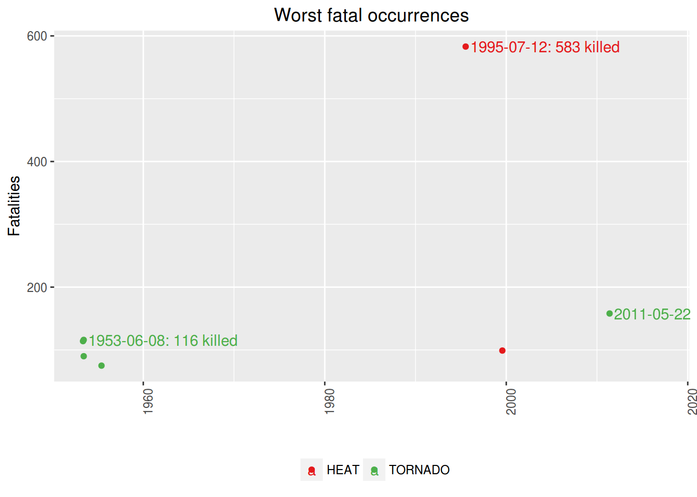
The single most fatal event was a HEAT, that occurred in IL, ILZ003, on 1995-07-12, killing 583 people.
However, if we compare this single awful event to the mean of fatalities caused, we see that this is very unlikely to happen.
3.1.2 Most fatal in all time
Most fatal in all time
Notice that are several occurrences of the same type of event along the time.
Therefore, in order to know which is the worst type of event along all the years, we summed up the fatalities caused by each one of occurrences of this events.
Notice that we are interested only in the worst of them, ie, the ones which are above the mean.
# totals per event
fatal.all.df <- fatal.df %>% group_by(event) %>%
summarise(total = sum(fatalities)) %>% arrange(desc(total)) %>%
mutate(mean = mean(total), median = median(total),
rank = seq_len(length(event))) %>%
filter(total > mean(total))
# create color pallete for all events
colourCount.fatal.all = length(unique(fatal.all.df$event))
getPalette = colorRampPalette(brewer.pal(colourCount.fatal.all, "Set1"))
# prepare text for inline R
worst.fatal.all.ev <- fatal.all.df$event[1]
worst.fatal.all.kill <- fatal.all.df$total[1]
# a table
kable(fatal.all.df[,c(5,1:4)])| rank | event | total | mean | median |
|---|---|---|---|---|
| 1 | TORNADO | 5636 | 398.5526 | 38.5 |
| 2 | HEAT | 3149 | 398.5526 | 38.5 |
| 3 | FLOOD | 1553 | 398.5526 | 38.5 |
| 4 | WIND | 1451 | 398.5526 | 38.5 |
| 5 | LIGHTNING | 816 | 398.5526 | 38.5 |
# the plot
plt.fatal.all <- ggplot(data=fatal.all.df, aes(event, total, fill=event))
plt.fatal.all <- plt.fatal.all + geom_bar(stat="identity") +
geom_text(aes(label=ifelse(total==max(total),
paste0(event, ": ", max(total), " killed"),'')),
hjust=0,vjust=2) +
geom_hline(aes(yintercept = mean), linetype=1) +
# geom_hline(aes(yintercept = median), linetype=2) +
labs(title="All time", y="",
x="") +
theme(legend.position="none") +
scale_colour_manual(values = getPalette(colourCount.fatal.all))+
theme(legend.title=element_blank()) +
theme(axis.text.x = element_text(angle = 90, hjust = 1)) +
theme(plot.title = element_text(hjust = 0.5))
plt.fatal.all + labs(title="Most fatal type of event - all time",
y="Fatalities", x="") 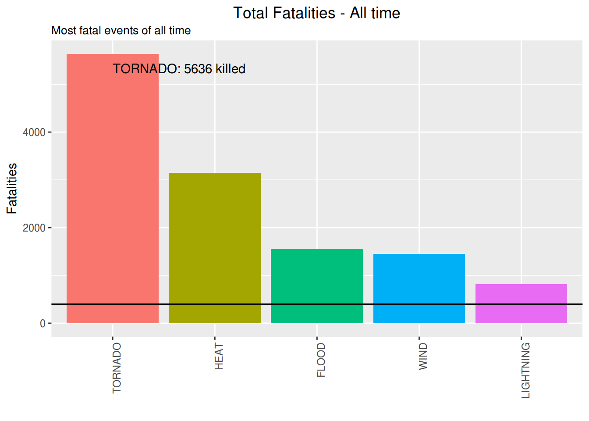
The most fatal event along the time is the TORNADO. It has killed 5636 people until now.
Just for curiosity, these are the less fatal among the fatal events:
# sort for less dangerous, had to subset again due to previous filtering
fatal.all.df <- fatal.df %>% group_by(event) %>%
summarise(total = sum(fatalities)) %>% arrange(total) %>%
mutate(mean = mean(total), median = median(total),
rank = seq(length(event),1, by=-1))
# a table
kable(fatal.all.df[1:10,c(5,1:2)])| rank | event | total |
|---|---|---|
| 38 | BLACK ICE | 1 |
| 37 | FROST | 1 |
| 36 | HIGH SWELLS | 1 |
| 35 | WINTRY MIX | 1 |
| 34 | DUST DEVIL | 2 |
| 33 | SLEET | 2 |
| 32 | HIGH WATER | 3 |
| 31 | WATERSPOUT | 3 |
| 30 | HIGH SEAS | 5 |
| 29 | ICY ROADS | 5 |
3.2 Injuring Occurrences
3.2.1 Most injuring in a single occurrence
Most injuring in a single occurrence
In order to determine what were the most injuring events in a single occurrence, we need to see how injuries are distributed along the occurrences.
rm(fatal.df,fatal.all.df, fatal95.df, qt) # cleannig house
injuring.df <- harm.df %>% filter(!is.na(injuries)) %>%
select(1:6,8)
# quantiles
qt <- quantile(injuring.df$injuries, probs=seq(.975,1,0.002))
# distribution plot
plt.distr.inj0 <- ggplot(injuring.df, aes(injuries))
plt.distr.inj0 <- plt.distr.inj0 + geom_density(aes(y=..density..)) + xlim(0,0.5) +
labs(title="All events") +
theme(plot.title = element_text(hjust = 0.5))
# display only the qts next to injuring events
qt[(length(qt)-(length(qt[qt>=1])+1)): length(qt)]## 97.7% 97.9% 98.1% 98.3% 98.5% 98.7% 98.9% 99.1% 99.3% 99.5% 99.7% 99.9%
## 0 0 1 1 1 1 1 2 3 4 8 25Looking at this distribution, we can infer that the vast majority of those occurrences were not injuring at all: 97.9% occurrences didn’t caused any injuries
On the other hand, injuring occurrences had to have at least 1 injury.
Now, among the injuring occurrences, we are interested in the ones whose harm is beyond the confidence interval, ie. above 99% of the most common values.
# subset for harm events
injuring.df <- injuring.df %>% filter(injuries > 0) %>%
arrange(desc(injuries)) %>%
mutate(mean = mean(injuries),
median = median(injuries),
rank = seq_len(length(event)))
# quantiles, same as
# poisson.test(mean, conf.level = 0.95)
qt <- quantile(injuring.df$injuries, probs=seq(.999,1,0.005))
qt## 99.9%
## 500Looking at this distribution, we can infer that 99.8% of the injuring occurrences caused up to 500 injuries.
Distribution plots
# distribution plot
plt.distr.inj1 <- ggplot(injuring.df, aes(injuries))
plt.distr.inj1 <- plt.distr.inj1 + geom_density(aes(y=..density..)) + xlim(0,(qt[1]/20)) +
labs(title="Injuring events") +
theme(plot.title = element_text(hjust = 0.5)) grid.arrange(plt.distr.inj0, plt.distr.inj1,
nrow=1, ncol=2,
bottom="Population distribution")
grid.rect(gp=gpar(fill=NA))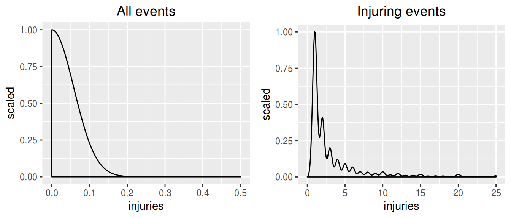
In this study, we looked on the 1% most injuring occurrences.
# subset for 99% CI
injuring95.df <- filter(injuring.df, injuries>qt[1])
# create color pallete for all events
colourCount.inj.single = length(unique(injuring95.df$event))
getPalette = colorRampPalette(brewer.pal(colourCount.inj.single, "Set1"))
# print a table
kable(injuring95.df[,c(10,1:9)])| rank | event | mag | day | duration | state | countyname | injuries | mean | median |
|---|---|---|---|---|---|---|---|---|---|
| 1 | TORNADO | 0 | 1979-04-10 | NA | TX | WICHITA | 1700 | 7.982731 | 2 |
| 2 | STORM | 0 | 1994-02-08 | 0S | OH | OHZ42 | 1568 | 7.982731 | 2 |
| 3 | TORNADO | 0 | 1953-06-09 | NA | MA | WORCESTER | 1228 | 7.982731 | 2 |
| 4 | TORNADO | 0 | 1974-04-03 | NA | OH | GREENE | 1150 | 7.982731 | 2 |
| 5 | TORNADO | 0 | 2011-05-22 | 0S | MO | JASPER | 1150 | 7.982731 | 2 |
| 6 | FLOOD | 0 | 1998-10-17 | 0S | TX | COMAL | 800 | 7.982731 | 2 |
| 7 | TORNADO | 0 | 2011-04-27 | 0S | AL | TUSCALOOS | 800 | 7.982731 | 2 |
| 8 | TORNADO | 0 | 1953-06-08 | NA | MI | GENESEE | 785 | 7.982731 | 2 |
| 9 | HURRICANE | 0 | 2004-08-13 | 0S | FL | FLZ055 | 780 | 7.982731 | 2 |
| 10 | FLOOD | 0 | 1998-10-17 | 0S | TX | TXZ206 | 750 | 7.982731 | 2 |
| 11 | TORNADO | 0 | 2011-04-27 | 0S | AL | JEFFERSON | 700 | 7.982731 | 2 |
| 12 | FLOOD | 0 | 1998-10-17 | 0S | TX | BEXAR | 600 | 7.982731 | 2 |
| 13 | TORNADO | 0 | 1953-05-11 | NA | TX | MCLENNAN | 597 | 7.982731 | 2 |
| 14 | TORNADO | 0 | 1965-04-11 | NA | IN | HOWARD | 560 | 7.982731 | 2 |
| 15 | FLOOD | 0 | 1998-10-17 | 0S | TX | TXZ205 | 550 | 7.982731 | 2 |
| 16 | HEAT | 0 | 2007-08-04 | 0S | MO | MOZ061 | 519 | 7.982731 | 2 |
| 17 | TORNADO | 0 | 1966-03-03 | NA | MS | HINDS | 504 | 7.982731 | 2 |
# prepare text for inline R
worst.injuring.single.ev <- injuring95.df$event[1]
worst.injuring.single.st <- injuring95.df$state[1]
worst.injuring.single.ct <- injuring95.df$countyname[1]
worst.injuring.single.dt <- injuring95.df$day[1]
worst.injuring.single.inj <- injuring95.df$injuries[1]# the plot
plt.inj.single <- ggplot(injuring95.df, aes(day, injuries, colour=event))
plt.inj.single <- plt.inj.single + geom_point() +
geom_text(aes(label=ifelse(rank <= 3,
paste0(as.character(day), ": ", injuries, " injuried") ,""),
hjust=-.03,vjust=0.5)) +
# geom_hline(aes(yintercept = mean), linetype=2) +
# geom_hline(aes(yintercept = median), linetype=3) +
labs(title="Most Injuring",
y="", x="") +
expand_limits(x=as.Date('2017-01-01'))+ #ok
scale_colour_manual(values = getPalette(colourCount.inj.single))+
theme(legend.title=element_blank()) +
theme(legend.position="bottom") +
guides(fill=guide_legend(nrow=5, byrow=TRUE)) +
theme(axis.text.x = element_text(angle = 90, hjust = 1)) +
theme(plot.title = element_text(hjust = 0.5))
plt.inj.single + labs(title="Most Injuring Occurrence",
y="Injuries", x="") 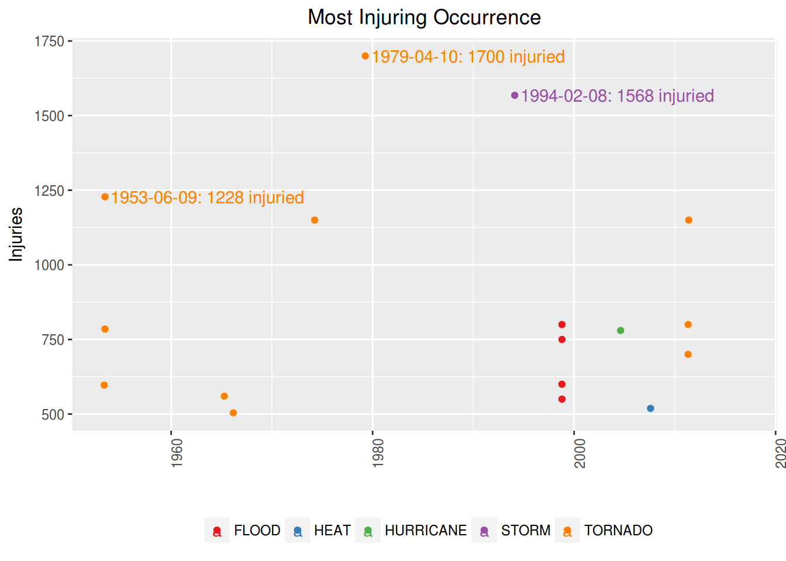
# scale_y_continuous(expand = c(0, 0)) +
# geom_hline(aes(yintercept = mean), linetype=2) +
# geom_hline(aes(yintercept = median), linetype=3)The single most injuring event was a TORNADO, that occurred in TX, WICHITA, on 1979-04-10, injuring 1700 people.
However, if we compare this single awful event to the mean of injuries caused, we see that this is very unlikely to happen.
3.2.2 Most injuring in all time
Most injuring in all time
Notice that are several occurrences of the same type of event along the time.
Therefore, in order to know which is the worst type of event along all the years, we summed up the injuries caused by each one of occurrences of this events.
Notice that we are interested only in the worst of them, ie, the ones which are above the mean.
# totals per event
injuring.all.df <- injuring.df %>% group_by(event) %>%
summarise(total = sum(injuries)) %>%
arrange(desc(total)) %>%
mutate(mean = mean(total), median = median(total),
rank = seq_len(length(event))) %>%
filter(total >= mean(total))
# create color pallete for all events
colourCount.inj.all = length(unique(injuring.all.df$event))
getPalette = colorRampPalette(brewer.pal(colourCount.inj.all, "Set1"))
# prepare text for inline R
worst.injuring.all.ev <- injuring.all.df$event[1]
worst.injuring.all.inj <- injuring.all.df$total[1]
# a table
kable(injuring.all.df[,c(5,1:4)])| rank | event | total | mean | median |
|---|---|---|---|---|
| 1 | TORNADO | 91407 | 4015.086 | 232 |
| 2 | WIND | 11497 | 4015.086 | 232 |
| 3 | HEAT | 9243 | 4015.086 | 232 |
| 4 | FLOOD | 8683 | 4015.086 | 232 |
| 5 | LIGHTNING | 5230 | 4015.086 | 232 |
The most injuring event along the time is the TORNADO. It has injuried 91407 people until now.
# the plot
plt.inj.all <- ggplot(data=injuring.all.df, aes(event, total, fill=event))
plt.inj.all <- plt.inj.all + geom_bar(stat="identity") +
geom_text(aes(label=ifelse(total==max(total),
paste0(event, ": ", max(total), " injuried"),'')),
hjust=0,vjust=2) +
geom_hline(aes(yintercept = mean), linetype=1) +
# geom_hline(aes(yintercept = median), linetype=2) +
labs(title="All time",
y="", x="") +
theme(legend.position="none") +
scale_colour_manual(values = getPalette(colourCount.inj.all))+
theme(legend.title=element_blank()) +
theme(axis.text.x = element_text(angle = 90, hjust = 1)) +
theme(plot.title = element_text(hjust = 0.5))
plt.inj.all + labs(title="Most Injuring type of event - all time",
y="Injuries", x="")
Just for curiosity, lets show now what are the less injuring among the injuring events:
# sort for less dangerous, had to subset again due to previous filtering
injuring.all.df <- injuring.df %>% group_by(event) %>%
summarise(total = sum(injuries)) %>% arrange(total) %>%
mutate(mean = mean(total), median = median(total),
rank = seq(length(event),1, by=-1))
# a table
kable(injuring.all.df[1:10,c(5,1:2)])| rank | event | total |
|---|---|---|
| 35 | FROST | 3 |
| 34 | FUNNEL | 3 |
| 33 | TIDE | 5 |
| 32 | TYPHOON | 5 |
| 31 | HIGH SEAS | 8 |
| 30 | OTHER | 21 |
| 29 | BLACK ICE | 24 |
| 28 | WATERSPOUT | 29 |
| 27 | ICY ROADS | 31 |
| 26 | DROUGHT | 33 |
4 Economy: the the most harmfull events
We have determined what events did more harm to economy, both in terms of property and crops damage.
There were events that causes zero property damage but a lot of crop damage. The inverse is also true, so we did a separate analysis to property VS crop damaging events.
4.1 Property losses
4.1.1 Most Property Damaging event in a single occurrence
Most Property Damaging event in a single occurrence
In order to determine what were the most property damaging events in a single occurrence, we need to see how damages are distributed along the occurrences.
# property damages
rm(injuring.df, injuring.all.df, injuring95.df) # cleannig house
prop.df <- harm.df %>% filter(!is.na(prop.ev)) %>%
select(1:6,13)
# quantiles
qt <- quantile(prop.df$prop.ev, probs=seq(.999,1,0.002))
# distribution plot
plt.distr.prop0 <- ggplot(prop.df, aes(log(prop.ev)))
plt.distr.prop0 <- plt.distr.prop0 + geom_density(aes(y=..density..)) + #xlim(0,.5) +
labs(title="All events", x="log(amount $)") +
theme(plot.title = element_text(hjust = 0.5))
# display only the qts next to harmfull events
qt## 99.9%
## 53931800Looking at this distribution, we can infer that 99.8% of the occurrences caused less than $53,931,800 in losses.
On the other hand, damaging occurrences had to have damages above zero.
Now, among the damaging occurrences, we are interested in the ones whose damages are above 99.8% of the most common values.
# subset for harm events
prop.df <- prop.df %>% filter(prop.ev > 0) %>%
arrange(desc(prop.ev)) %>%
mutate(value = dollar(prop.ev),
media.raw = mean(prop.ev),
mediana.raw = median(prop.ev),
mean = dollar(media.raw),
median = dollar(mediana.raw),
rank = seq_len(length(event)))
# quantiles, same as
qt <- quantile(prop.df$prop.ev, probs=seq(.999,1,0.002))
qt## 99.9%
## 120000000Looking at this distribution, we can infer that 99.8% of the damaging occurrences caused up to $120,000,000 in losses.
Distribution plots
# distribution plot
plt.distr.prop1 <- ggplot(prop.df, aes(log(prop.ev)))
plt.distr.prop1 <- plt.distr.prop1 + geom_density(aes(y=..density..)) + #xlim(0,100) +
labs(title="Damaging events", x="log(amount $)") +
theme(plot.title = element_text(hjust = 0.5)) grid.arrange(plt.distr.prop0, plt.distr.prop1,
nrow=1, ncol=2,
bottom="Population distribution")
grid.rect(gp=gpar(fill=NA))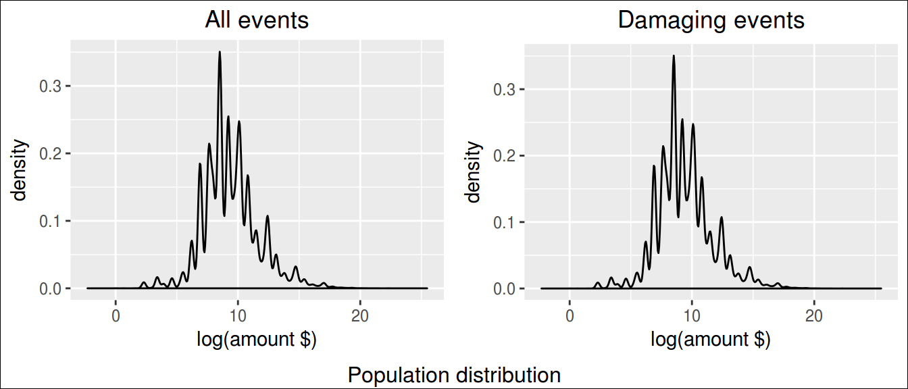
In this study, we looked on the 1% most harmful occurrences.
# subset for 99% CI
prop95.df <- filter(prop.df, prop.ev>qt[1])
# create color pallete for all events
colourCount.prop.single = length(unique(prop95.df$event))
getPalette = colorRampPalette(brewer.pal(colourCount.prop.single, "Set1"))
# print a table
kable(prop95.df[1:20,c(13,1:6,8,11:12)])| rank | event | mag | day | duration | state | countyname | value | mean | median |
|---|---|---|---|---|---|---|---|---|---|
| 1 | FLOOD | 0 | 2006-01-01 | 0S | CA | NAPA | $115,000,000,000 | $1,791,099 | $10,000 |
| 2 | STORM | 0 | 2005-08-29 | 0S | LA | LAZ040 | $31,300,000,000 | $1,791,099 | $10,000 |
| 3 | HURRICANE | 0 | 2005-08-28 | 0S | LA | LAZ034 | $16,930,000,000 | $1,791,099 | $10,000 |
| 4 | STORM | 0 | 2005-08-29 | 0S | MS | MSZ080 | $11,260,000,000 | $1,791,099 | $10,000 |
| 5 | HURRICANE | 0 | 2005-10-24 | 0S | FL | FLZ068 | $10,000,000,000 | $1,791,099 | $10,000 |
| 6 | HURRICANE | 0 | 2005-08-28 | 0S | MS | MSZ068 | $7,350,000,000 | $1,791,099 | $10,000 |
| 7 | HURRICANE | 0 | 2005-08-29 | 0S | MS | MSZ018 | $5,880,000,000 | $1,791,099 | $10,000 |
| 8 | HURRICANE | 0 | 2004-08-13 | 0S | FL | FLZ055 | $5,420,000,000 | $1,791,099 | $10,000 |
| 9 | STORM | 0 | 2001-06-05 | 0S | TX | TXZ163 | $5,150,000,000 | $1,791,099 | $10,000 |
| 10 | WINTER | 0 | 1993-03-12 | 0S | AL | ALZ001 | $5,000,000,000 | $1,791,099 | $10,000 |
| 11 | FLOOD | 0 | 1993-08-31 | NA | IL | ADAMS | $5,000,000,000 | $1,791,099 | $10,000 |
| 12 | HURRICANE | 0 | 2004-09-04 | 0S | FL | FLZ041 | $4,830,000,000 | $1,791,099 | $10,000 |
| 13 | HURRICANE | 0 | 2004-09-13 | 0S | FL | FLZ001 | $4,000,000,000 | $1,791,099 | $10,000 |
| 14 | HURRICANE | 0 | 2005-09-23 | 0S | LA | LAZ027 | $4,000,000,000 | $1,791,099 | $10,000 |
| 15 | TIDE | 0 | 2008-09-12 | 0S | TX | TXZ213 | $4,000,000,000 | $1,791,099 | $10,000 |
| 16 | FLOOD | 0 | 1997-04-18 | 0S | ND | NDZ027 | $3,000,000,000 | $1,791,099 | $10,000 |
| 17 | HURRICANE | 0 | 1999-09-15 | 0S | NC | NCZ007 | $3,000,000,000 | $1,791,099 | $10,000 |
| 18 | TORNADO | 0 | 2011-05-22 | 0S | MO | JASPER | $2,800,000,000 | $1,791,099 | $10,000 |
| 19 | RAIN | 0 | 1995-05-08 | 0S | LA | LAFOURCHE | $2,500,000,000 | $1,791,099 | $10,000 |
| 20 | HURRICANE | 0 | 2004-09-13 | 0S | AL | ALZ051 | $2,500,000,000 | $1,791,099 | $10,000 |
# prepare text for inline R
worst.prop.single.ev <- prop95.df$event[1]
worst.prop.single.st <- prop95.df$state[1]
worst.prop.single.ct <- prop95.df$countyname[1]
worst.prop.single.dt <- prop95.df$day[1]
worst.prop.single.value <- prop95.df$value[1]plt.prop.single <- ggplot(prop95.df, aes(day, prop.ev, colour=event))
plt.prop.single <- plt.prop.single + geom_point() +
geom_text(aes(label=ifelse(rank <= 3,
as.character(day),""),
hjust=-.03,vjust=0.5)) +
# geom_hline(aes(yintercept = media.raw), linetype=2) +
# geom_hline(aes(yintercept = mediana.raw), linetype=3) +
labs(title="Property Dammaging",
y="", x="") +
expand_limits(x=as.Date('2017-01-01'))+ #ok
scale_y_continuous(labels = dollar)+
scale_colour_manual(values = getPalette(colourCount.prop.single))+
theme(legend.title=element_blank()) +
theme(legend.position="bottom") +
guides(fill=guide_legend(nrow=5, byrow=TRUE)) +
theme(axis.text.x = element_text(angle = 90, hjust = 1)) +
theme(plot.title = element_text(hjust = 0.5))
plt.prop.single + labs(title="Most property damaging Occurrence",
y="Losses", x="")
The single most economic damaging event to properties was a FLOOD, that occurred in CA, NAPA, on 2006-01-01, causing U$ $115,000,000,000 in losses.
4.1.2 Most Property Damaging event in all time
Most Property Damaging event in all time
Notice that are several occurrences of the same type of event along the time.
Therefore, in order to know which is the worst type of event along all the years, we summed up the losses caused by each one of occurrences of this events.
Notice that we are interested only in the worst of them, ie, the ones which are above the mean.
# totals per event
prop.all.df <- prop.df %>% group_by(event) %>%
summarise(total.raw = sum(prop.ev)) %>%
arrange(desc(total.raw)) %>%
mutate(media.raw = mean(total.raw),
mediana.raw = median(total.raw),
total = dollar(total.raw),
mean = dollar(media.raw),
median = dollar(mediana.raw),
rank = seq_len(length(event))) %>%
filter(total.raw > mean(total.raw))
# create color pallete for all events
colourCount.prop.all = length(unique(prop.all.df$event))
getPalette = colorRampPalette(brewer.pal(colourCount.prop.all, "Set1"))
# prepare text for inline R
worst.prop.all.ev <- prop.all.df$event[1]
worst.prop.total <- prop.all.df$total[1]
# a table
kable(prop.all.df[, c(8,1,5:7)])| rank | event | total | mean | median |
|---|---|---|---|---|
| 1 | FLOOD | $168,258,894,238 | $9,309,236,205 | $6,537,750 |
| 2 | HURRICANE | $84,656,180,010 | $9,309,236,205 | $6,537,750 |
| 3 | TORNADO | $57,003,317,814 | $9,309,236,205 | $6,537,750 |
| 4 | STORM | $56,197,366,960 | $9,309,236,205 | $6,537,750 |
| 5 | WIND | $17,951,211,793 | $9,309,236,205 | $6,537,750 |
| 6 | HAIL | $15,977,047,956 | $9,309,236,205 | $6,537,750 |
plt.prop.all <- ggplot(data=prop.all.df, aes(event, total.raw, fill=event))
plt.prop.all <- plt.prop.all + geom_bar(stat="identity") +
geom_text(aes(label=ifelse(total.raw==max(total.raw),
paste(event, dollar(max(total.raw)), sep=": "),'')),
hjust=0,vjust=2) +
geom_hline(aes(yintercept = media.raw), linetype=1) +
# geom_hline(aes(yintercept = mediana.raw), linetype=2) +
labs(title="All time", y="", x="") +
scale_y_continuous(labels = dollar)+
theme(legend.position="none") +
scale_colour_manual(values = getPalette(colourCount.prop.all))+
theme(legend.title=element_blank()) +
theme(axis.text.x = element_text(angle = 90, hjust = 1)) +
theme(plot.title = element_text(hjust = 0.5))
plt.prop.all + labs(title="Most property damaging type of event - all time",
y="Losses", x="")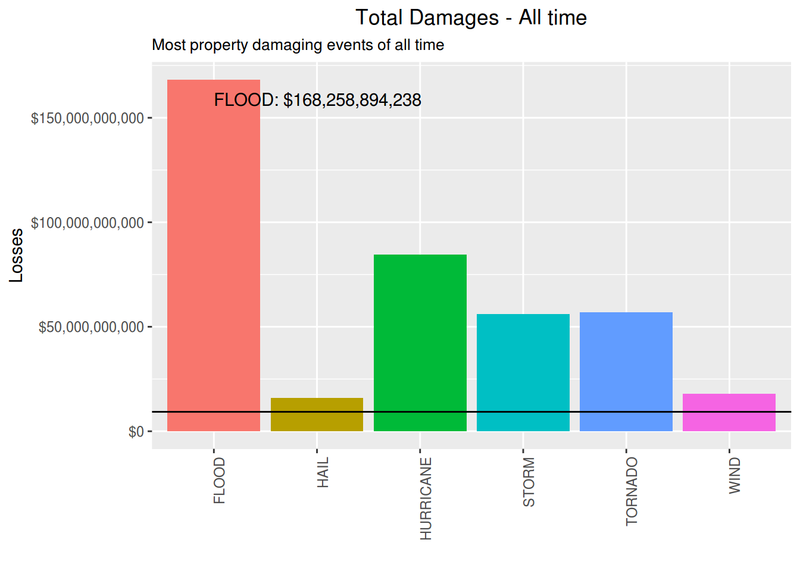
The most property damaging event along the time is the FLOOD. It has caused $168,258,894,238 in losses.
Just for curiosity, these are the less damaging events:
prop.all.df <- prop.df %>% group_by(event) %>%
summarise(total.raw = sum(prop.ev)) %>%
arrange(total.raw) %>%
mutate(media.raw = mean(total.raw),
mediana.raw = median(total.raw),
total = dollar(total.raw),
mean = dollar(media.raw),
median = dollar(mediana.raw),
rank = seq(length(event),1, by=-1))
kable(prop.all.df[1:10, c(8,1,5:7)])| rank | event | total | mean | median |
|---|---|---|---|---|
| 46 | RIP CURRENT | $1,000 | $9,309,236,205 | $6,537,750 |
| 45 | HIGH SWELLS | $5,000 | $9,309,236,205 | $6,537,750 |
| 44 | URBAN/SMALL STREAM | $5,000 | $9,309,236,205 | $6,537,750 |
| 43 | WINTRY MIX | $12,500 | $9,309,236,205 | $6,537,750 |
| 42 | FROST | $15,000 | $9,309,236,205 | $6,537,750 |
| 41 | HIGH SEAS | $15,500 | $9,309,236,205 | $6,537,750 |
| 40 | WET MICROBURST | $35,000 | $9,309,236,205 | $6,537,750 |
| 39 | MICROBURST | $80,000 | $9,309,236,205 | $6,537,750 |
| 38 | DENSE SMOKE | $100,000 | $9,309,236,205 | $6,537,750 |
| 37 | GUSTNADO | $102,050 | $9,309,236,205 | $6,537,750 |
4.2 Crop losses
4.2.1 Most Crop Damaging event in a single occurrence
Most Crop Damaging event in a single occurrence
In order to determine what were the most crop damaging events in a single occurrence, we need to see how damages are distributed along the occurrences.
# crop damages
rm(prop.df, prop.all.df, prop95.df) # cleannig house
crop.df <- harm.df %>% filter(!is.na(crop.ev)) %>%
select(1:6,14)
# quantiles
qt <- quantile(crop.df$crop.ev, probs=seq(.998,1,0.002))
# distribution plot
plt.distr.crop0 <- ggplot(crop.df, aes(log(crop.ev)))
plt.distr.crop0 <- plt.distr.crop0 + geom_density(aes(y=..density..)) + #xlim(0,.5) +
labs(title="All events", x="log(amount $)") +
theme(plot.title = element_text(hjust = 0.5))
# display only the qts next to harmfull events
qt## 99.8% 100%
## 7000000 5000000000Looking at this distribution, we can infer that 99% of the occurrences caused less than $7,000,000 in losses.
On the other hand, damaging occurrences had to have damages above zero.
Now, among the damaging occurrences, we are interested in the ones whose damages are above 99% of the most common values.
# subset for harm events
crop.df <- crop.df %>% filter(crop.ev > 0) %>%
arrange(desc(crop.ev)) %>%
mutate(value = dollar(crop.ev),
media.raw = mean(crop.ev),
mediana.raw = median(crop.ev),
mean = dollar(media.raw),
median = dollar(mediana.raw),
rank = seq_len(length(event)))
# quantiles, same as
# poisson.test(mean, conf.level = 0.95)
qt <- quantile(crop.df$crop.ev, probs=seq(.999,1,0.005))
qt## 99.9%
## 336111520Looking at this distribution, we can infer that 99.8% of the damaging occurrences caused up to $336,111,520 in losses.
Distribution plots
# distribution plot
plt.distr.crop1 <- ggplot(crop.df, aes(log(crop.ev)))
plt.distr.crop1 <- plt.distr.crop1 + geom_density(aes(y=..density..)) + #xlim(0,qt[1]) +
labs(title="Damaging events", x="log(amount $)") +
# scale_x_continuous(labels = dollar)+
# theme(axis.text.x = element_text(angle = 90, hjust = 1)) +
theme(plot.title = element_text(hjust = 0.5)) grid.arrange(plt.distr.crop0, plt.distr.crop1,
nrow=1, ncol=2,
bottom="Population distribution")
grid.rect(gp=gpar(fill=NA))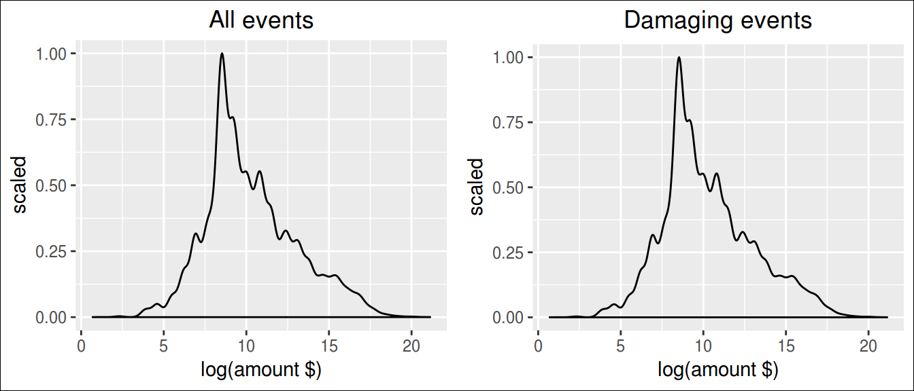
In this study, we looked on the 1% most harmful occurrences.
# subset for 99% CI
crop95.df <- filter(crop.df, crop.ev>qt[1])
# create color pallete for all events
colourCount.crop.single = length(unique(crop95.df$event))
getPalette = colorRampPalette(brewer.pal(colourCount.crop.single, "Set1"))
# print a table
kable(crop95.df[1:20,c(13,1:6,8,11:12)])| rank | event | mag | day | duration | state | countyname | value | mean | median |
|---|---|---|---|---|---|---|---|---|---|
| 1 | FLOOD | 0 | 1993-08-31 | NA | IL | ADAMS | $5,000,000,000 | $2,224,406 | $15,000 |
| 2 | STORM | 0 | 1994-02-09 | 0S | MS | MSZ001 | $5,000,000,000 | $2,224,406 | $15,000 |
| 3 | HURRICANE | 0 | 2005-08-29 | 0S | MS | MSZ018 | $1,510,000,000 | $2,224,406 | $15,000 |
| 4 | DROUGHT | 0 | 2006-01-01 | 0S | TX | TXZ091 | $1,000,000,000 | $2,224,406 | $15,000 |
| 5 | COLD | 0 | 1998-12-20 | 0S | CA | CAZ020 | $596,000,000 | $2,224,406 | $15,000 |
| 6 | DROUGHT | 0 | 2001-08-01 | 0S | IA | IAZ004 | $578,850,000 | $2,224,406 | $15,000 |
| 7 | DROUGHT | 0 | 2000-11-01 | 0S | TX | TXZ021 | $515,000,000 | $2,224,406 | $15,000 |
| 8 | DROUGHT | 0 | 1995-08-01 | 0S | IA | IAZ004 | $500,000,000 | $2,224,406 | $15,000 |
| 9 | DROUGHT | 0 | 1998-07-06 | 0S | OK | OKZ049 | $500,000,000 | $2,224,406 | $15,000 |
| 10 | HURRICANE | 0 | 1999-09-15 | 0S | NC | NCZ007 | $500,000,000 | $2,224,406 | $15,000 |
| 11 | DROUGHT | 0 | 1999-07-01 | 0S | PA | PAZ006 | $500,000,000 | $2,224,406 | $15,000 |
| 12 | FLOOD | 0 | 2000-10-03 | 0S | FL | FLZ072 | $500,000,000 | $2,224,406 | $15,000 |
| 13 | FLOOD | 0 | 2007-07-01 | 0S | MO | HENRY | $500,000,000 | $2,224,406 | $15,000 |
| 14 | HEAT | 0 | 2006-07-16 | 0S | CA | CAZ089 | $492,400,000 | $2,224,406 | $15,000 |
| 15 | DROUGHT | 0 | 2002-12-01 | 0S | NE | NEZ039 | $480,000,000 | $2,224,406 | $15,000 |
| 16 | DROUGHT | 0 | 1998-12-01 | 0S | TX | TXZ021 | $450,000,000 | $2,224,406 | $15,000 |
| 17 | HURRICANE | 0 | 2005-08-25 | 0S | FL | FLZ068 | $423,000,000 | $2,224,406 | $15,000 |
| 18 | DROUGHT | 0 | 2001-12-01 | 0S | TX | TXZ021 | $420,000,000 | $2,224,406 | $15,000 |
| 19 | HURRICANE | 0 | 1999-09-14 | 0S | NC | NCZ029 | $413,600,000 | $2,224,406 | $15,000 |
| 20 | HEAT | 0 | 1995-08-20 | NA | AL | TALLADEGA | $400,000,000 | $2,224,406 | $15,000 |
worst.crop.single.ev <- crop95.df$event[1]
worst.crop.single.st <- crop95.df$state[1]
worst.crop.single.ct <- crop95.df$countyname[1]
worst.crop.single.dt <- crop95.df$day[1]
worst.crop.single.value <- crop95.df$value[1]plt.crop.single <- ggplot(crop95.df, aes(day, crop.ev, colour=event))
plt.crop.single <- plt.crop.single + geom_point() +
geom_text(aes(label=ifelse(rank <= 3,
as.character(day),""),
hjust=-.03,vjust=0.5)) +
# geom_hline(aes(yintercept = media.raw), linetype=2) +
# geom_hline(aes(yintercept = mediana.raw), linetype=3) +
labs(title="Crop Dammaging",
y="", x="") +
expand_limits(x=as.Date('2017-01-01'))+ #ok
scale_y_continuous(labels = dollar)+
scale_colour_manual(values = getPalette(colourCount.crop.single))+
theme(legend.title=element_blank()) +
theme(legend.position="bottom") +
guides(fill=guide_legend(nrow=5, byrow=TRUE)) +
theme(axis.text.x = element_text(angle = 90, hjust = 1)) +
theme(plot.title = element_text(hjust = 0.5))
plt.crop.single + labs(title="Most crop damaging Occurrence",
y="Losses", x="")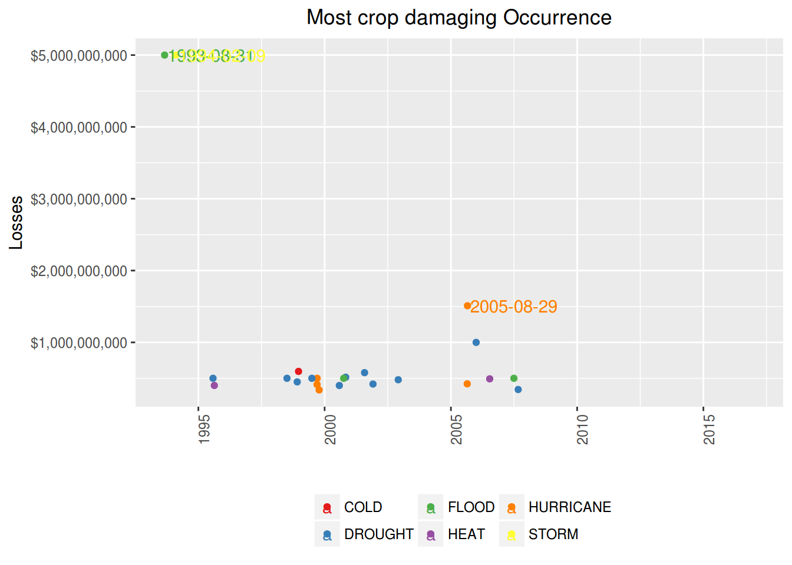
The single most economic damaging event to crops was a FLOOD, that occurred in IL, ADAMS, on 1993-08-31, causing U$ $5,000,000,000 in losses.
4.2.2 Most Crop Damaging event in all time
Most Crop Damaging event in all time
Notice that are several occurrences of the same type of event along the time.
Therefore, in order to know which is the worst type of event along all the years, we summed up the losses caused by each one of occurrences of this events.
Notice that we are interested only in the worst of them, ie, the ones which are above the mean.
# totals per event
crop.all.df <- crop.df %>% group_by(event) %>%
summarise(total.raw = sum(crop.ev)) %>%
arrange(desc(total.raw)) %>%
mutate(media.raw = mean(total.raw),
mediana.raw = median(total.raw),
total = dollar(total.raw),
mean = dollar(media.raw),
median = dollar(mediana.raw),
rank = seq_len(length(event))) %>%
filter(total.raw > mean(total.raw))
# create color pallete for all events
colourCount.crop.all = length(unique(crop.all.df$event))
getPalette = colorRampPalette(brewer.pal(colourCount.crop.all, "Set1"))
# prepare text for inline R
worst.crop.all.ev <- crop.all.df$event[1]
worst.crop.total <- crop.all.df$total[1]
# a table
kable(crop.all.df[, c(8,1,5:7)])| rank | event | total | mean | median |
|---|---|---|---|---|
| 1 | DROUGHT | $13,972,581,000 | $2,231,988,917 | $296,658,415 |
| 2 | FLOOD | $12,275,737,200 | $2,231,988,917 | $296,658,415 |
| 3 | STORM | $5,738,319,500 | $2,231,988,917 | $296,658,415 |
| 4 | HURRICANE | $5,505,292,800 | $2,231,988,917 | $296,658,415 |
| 5 | COLD | $3,298,176,550 | $2,231,988,917 | $296,658,415 |
| 6 | HAIL | $3,046,470,470 | $2,231,988,917 | $296,658,415 |
plt.crop.all <- ggplot(data=crop.all.df, aes(event, total.raw, fill=event))
plt.crop.all <- plt.crop.all + geom_bar(stat="identity") +
geom_text(aes(label=ifelse(total.raw==max(total.raw),
paste(event, dollar(max(total.raw)), sep=": "),'')),
hjust=0,vjust=2) +
geom_hline(aes(yintercept = media.raw), linetype=1) +
# geom_hline(aes(yintercept = mediana.raw), linetype=2) +
labs(title="All time", y="", x="") +
scale_y_continuous(labels = dollar)+
theme(legend.position="none") +
scale_colour_manual(values = getPalette(colourCount.crop.all))+
theme(legend.title=element_blank()) +
theme(axis.text.x = element_text(angle = 90, hjust = 1)) +
theme(plot.title = element_text(hjust = 0.5))
plt.crop.all + labs(title="Most crops damaging type of event - all time",
y="Losses", x="")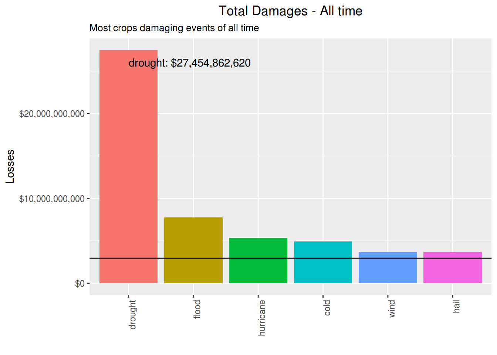
The most crop damaging event along the time is the DROUGHT. It has caused $13,972,581,000 in losses.
Just for curiosity, lets show now what are the less damaging among the events:
crop.all.df <- crop.df %>% group_by(event) %>%
summarise(total.raw = sum(crop.ev)) %>%
arrange(total.raw) %>%
mutate(media.raw = mean(total.raw),
mediana.raw = median(total.raw),
total = dollar(total.raw),
mean = dollar(media.raw),
median = dollar(mediana.raw),
rank = seq(length(event),1, by=-1))
kable(crop.all.df[1:10, c(8,1,5:7)])| rank | event | total | mean | median |
|---|---|---|---|---|
| 22 | GUSTNADO | $1,550 | $2,231,988,917 | $296,658,415 |
| 21 | TSUNAMI | $20,000 | $2,231,988,917 | $296,658,415 |
| 20 | TYPHOON | $825,000 | $2,231,988,917 | $296,658,415 |
| 19 | TIDE | $850,000 | $2,231,988,917 | $296,658,415 |
| 18 | LIGHTNING | $12,092,090 | $2,231,988,917 | $296,658,415 |
| 17 | SLIDE | $20,017,000 | $2,231,988,917 | $296,658,415 |
| 16 | WINTER | $42,444,000 | $2,231,988,917 | $296,658,415 |
| 15 | FROST | $66,000,000 | $2,231,988,917 | $296,658,415 |
| 14 | BLIZZARD | $112,060,000 | $2,231,988,917 | $296,658,415 |
| 13 | SNOW | $134,663,100 | $2,231,988,917 | $296,658,415 |
5 Most aflicted locations
Most afflicted locations
We have determined what locations had the worst outcome from those events, both in terms of human health and economic losses.
Unfortunatelly, these has been the worst counties for living in:
# subset original data
cities.df <- harm.df %>%
filter(!(is.na(countyname) | is.na(state))) %>%
select(6,5,7:14) %>%
group_by(state, countyname) %>%
summarise(fatalities = sum(fatalities, na.rm=TRUE),
injuries = sum(injuries, na.rm=TRUE),
prop.dmg = sum(prop.ev, na.rm=TRUE),
crop.dmg = sum(crop.ev, na.rm=TRUE)
)5.1 Worst fatality count
cities.fatal.df <- arrange(cities.df, desc(fatalities)) %>% ungroup(state, countyname) %>%
mutate(rank = seq_len(length(fatalities)),
prop.dmg = dollar(prop.dmg),
crop.dmg = dollar(crop.dmg)
)
kable(cities.fatal.df[1:10, c(7,1:6)])| rank | state | countyname | fatalities | injuries | prop.dmg | crop.dmg |
|---|---|---|---|---|---|---|
| 1 | IL | ILZ003 | 605 | 14 | $429,000 | $0 |
| 2 | IL | ILZ014 | 300 | 22 | $2,321,000 | $0 |
| 3 | PA | PAZ054 | 174 | 295 | $124,701,980 | $25,000,000 |
| 4 | MO | JASPER | 165 | 1271 | $2,858,007,330 | $5,500 |
| 5 | MI | GENESEE | 121 | 925 | $87,108,750 | $5,000,000 |
| 6 | TX | MCLENNAN | 117 | 635 | $63,071,100 | $4,000 |
| 7 | TX | TXZ163 | 116 | 3 | $6,131,681,000 | $270,200,000 |
| 8 | IL | ILZ005 | 114 | 0 | $277,000 | $0 |
| 9 | AL | JEFFERSON | 110 | 1576 | $2,024,930,600 | $2,254,000 |
| 10 | PA | PAZ037 | 107 | 0 | $0 | $0 |
worst.fatal.city.county <- cities.fatal.df$countyname[1]
worst.fatal.city.st <- cities.fatal.df$state[1]
worst.fatal.city.count <- cities.fatal.df$fatalities[1]The county with the biggest fatality count is ILZ003, in IL, with 605 people killed.
5.2 Worst injuries count
rm(cities.fatal.df) # house cleanning
cities.inj.df <- arrange(cities.df, desc(injuries)) %>% ungroup(state, countyname) %>%
mutate(rank = seq_len(length(injuries)),
prop.dmg = dollar(prop.dmg),
crop.dmg = dollar(crop.dmg)
)
kable(cities.inj.df[1:10, c(7,1:6)])| rank | state | countyname | fatalities | injuries | prop.dmg | crop.dmg |
|---|---|---|---|---|---|---|
| 1 | TX | WICHITA | 51 | 1852 | $310,139,880 | $0 |
| 2 | AL | JEFFERSON | 110 | 1576 | $2,024,930,600 | $2,254,000 |
| 3 | OH | OHZ42 | 1 | 1568 | $50,000,000 | $5,000,000 |
| 4 | MA | WORCESTER | 96 | 1289 | $284,569,630 | $0 |
| 5 | OH | GREENE | 37 | 1275 | $269,935,250 | $0 |
| 6 | MO | JASPER | 165 | 1271 | $2,858,007,330 | $5,500 |
| 7 | MO | MOZ061 | 9 | 1133 | $1,000 | $0 |
| 8 | AL | TUSCALOOS | 60 | 1103 | $1,604,059,750 | $725,000 |
| 9 | MO | MOZ009 | 73 | 978 | $3,225,050 | $23,649,200 |
| 10 | MI | GENESEE | 121 | 925 | $87,108,750 | $5,000,000 |
worst.inj.city.county <- cities.inj.df$countyname[1]
worst.inj.city.st <- cities.inj.df$state[1]
worst.inj.city.count <- cities.inj.df$injuries[1]The county with the biggest injuries count is WICHITA, in TX, with 1852 people injuried.
5.3 Worst property losses
rm(cities.inj.df) # house cleanning
cities.prop.df <- arrange(cities.df, desc(prop.dmg)) %>% ungroup(state, countyname) %>%
mutate(rank = seq_len(length(prop.dmg)),
prop.dmg = dollar(prop.dmg),
crop.dmg = dollar(crop.dmg)
)
kable(cities.prop.df[1:10, c(7,1:6)])| rank | state | countyname | fatalities | injuries | prop.dmg | crop.dmg |
|---|---|---|---|---|---|---|
| 1 | CA | NAPA | 1 | 0 | $115,116,385,000 | $66,900,000 |
| 2 | LA | LAZ040 | 0 | 0 | $31,316,850,000 | $0 |
| 3 | LA | LAZ034 | 1 | 0 | $17,152,118,400 | $178,330,000 |
| 4 | MS | MSZ080 | 0 | 1 | $11,264,195,000 | $0 |
| 5 | FL | FLZ068 | 19 | 16 | $10,367,010,000 | $1,047,000,000 |
| 6 | FL | FLZ001 | 33 | 0 | $9,686,320,000 | $87,800,000 |
| 7 | MS | MSZ068 | 1 | 0 | $7,375,405,000 | $0 |
| 8 | TX | TXZ163 | 116 | 3 | $6,131,681,000 | $270,200,000 |
| 9 | MS | MSZ018 | 17 | 104 | $5,908,768,000 | $1,514,706,500 |
| 10 | FL | FLZ055 | 9 | 786 | $5,424,027,000 | $292,000,000 |
worst.prop.city.county <- cities.prop.df$countyname[1]
worst.prop.city.st <- cities.prop.df$state[1]
worst.prop.city.count <- cities.prop.df$prop.dmg[1]The county with the biggest property losses is NAPA, in CA, with $115,116,385,000 in losses.
5.4 Worst crops losses
rm(cities.prop.df) # house cleanning
cities.crop.df <- arrange(cities.df, desc(crop.dmg)) %>% ungroup(state, countyname) %>%
mutate(rank = seq_len(length(crop.dmg)),
prop.dmg = dollar(prop.dmg),
crop.dmg = dollar(crop.dmg)
)
kable(cities.crop.df[1:10, c(7,1:6)])| rank | state | countyname | fatalities | injuries | prop.dmg | crop.dmg |
|---|---|---|---|---|---|---|
| 1 | IL | ADAMS | 0 | 23 | $5,009,087,550 | $5,000,084,000 |
| 2 | MS | MSZ001 | 4 | 5 | $2,643,000 | $5,000,000,000 |
| 3 | TX | TXZ091 | 69 | 224 | $182,509,000 | $2,422,471,000 |
| 4 | TX | TXZ021 | 2 | 4 | $12,450,000 | $1,845,050,000 |
| 5 | IA | IAZ004 | 10 | 9 | $737,543,460 | $1,579,805,100 |
| 6 | MS | MSZ018 | 17 | 104 | $5,908,768,000 | $1,514,706,500 |
| 7 | FL | FLZ068 | 19 | 16 | $10,367,010,000 | $1,047,000,000 |
| 8 | GA | GAZ001 | 20 | 29 | $158,011,850 | $926,260,000 |
| 9 | NE | NEZ039 | 4 | 14 | $22,057,020 | $771,550,000 |
| 10 | NC | NCZ029 | 29 | 201 | $1,940,635,500 | $768,600,000 |
worst.crop.city.county <- cities.crop.df$countyname[1]
worst.crop.city.st <- cities.crop.df$state[1]
worst.crop.city.count <- cities.crop.df$crop.dmg[1]The county with the biggest croperty losses is ADAMS, in IL, with $5,000,084,000 in losses.
6 Results
6.1 Population Health
# plist <- list(plt.fatal.single, plt.fatal.all, plt.inj.single, plt.inj.all)
# n <- length(plist)
# nCol <- floor(sqrt(n))
# do.call("grid.arrange", c(plist, ncol=nCol))
grid.arrange(plt.fatal.single, plt.fatal.all, plt.inj.single, plt.inj.all,
nrow=2, ncol=2,
bottom="Health impact")
grid.rect(gp=gpar(fill=NA))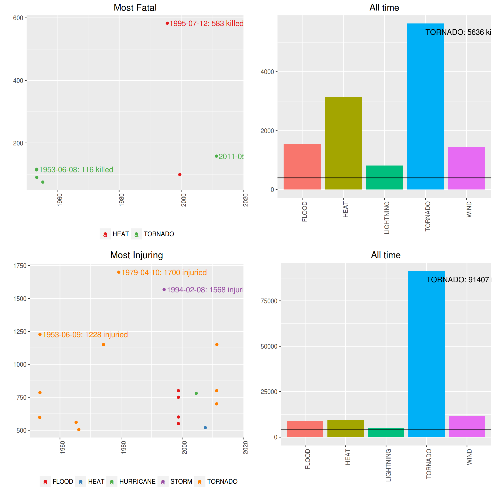
The single most fatal event was a HEAT, that occurred in IL, ILZ003, on 1995-07-12, killing 583 people.
The most fatal event along the time is the TORNADO. It has killed 5636 people until now.
The single most injuring event was a TORNADO, that occurred in TX, WICHITA, on 1979-04-10, injuring 1700 people.
The most injuring event along the time is the TORNADO. It has injuried 91407 people until now.
6.2 Economic Damages
grid.arrange(plt.prop.single, plt.prop.all,
plt.crop.single, plt.crop.all,
nrow=2, ncol=2,
bottom="Economic impact")
grid.rect(gp=gpar(fill=NA))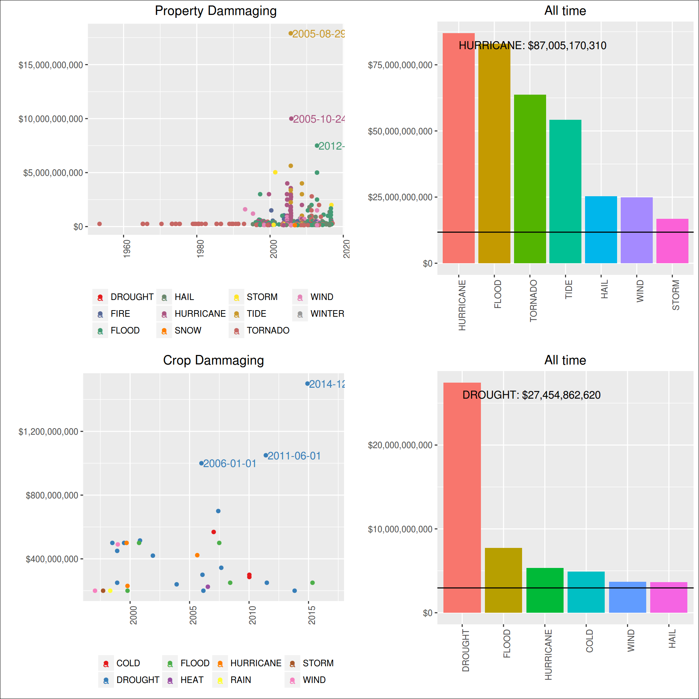
The single most economic damaging event to properties was a FLOOD, that occurred in CA, NAPA, on 2006-01-01, causing U$ $115,000,000,000 in losses.
The most property damaging event along the time is the FLOOD. It has caused $168,258,894,238 in losses.
The single most economic damaging event to crops was a FLOOD, that occurred in IL, ADAMS, on 1993-08-31, causing U$ $5,000,000,000 in losses.
The most crop damaging event along the time is the DROUGHT. It has caused $13,972,581,000 in losses.
6.3 Most aflicted locations
The county with the biggest fatality count is ILZ003, in IL, with 605 people killed.
The county with the biggest injuries count is WICHITA, in TX, with 1852 people injuried.
The county with the biggest property losses is NAPA, in CA, with $115,116,385,000 in losses.
The county with the biggest croperty losses is ADAMS, in IL, with $5,000,084,000 in losses.
6.4 Distribution of data
grid.arrange(plt.distr.fatal0, plt.distr.fatal1, plt.distr.inj0, plt.distr.inj1,
nrow=1, ncol=4,
bottom="Population distribution - fatalities and injuries")
grid.rect(gp=gpar(fill=NA)) 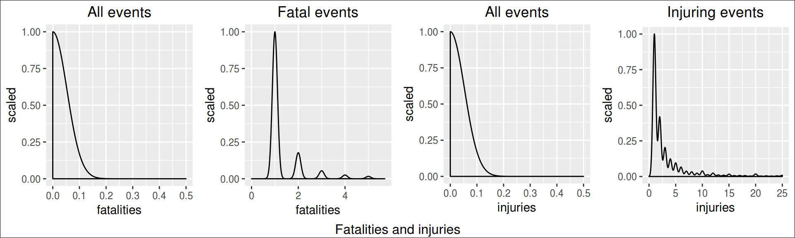
grid.arrange(plt.distr.prop0, plt.distr.prop1, plt.distr.crop0, plt.distr.crop1,
nrow=1, ncol=4,
bottom="Population distribution - property and crops losses")
grid.rect(gp=gpar(fill=NA)) 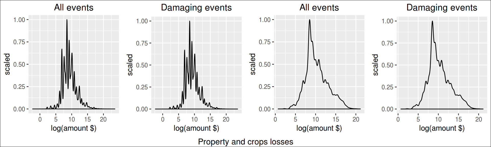